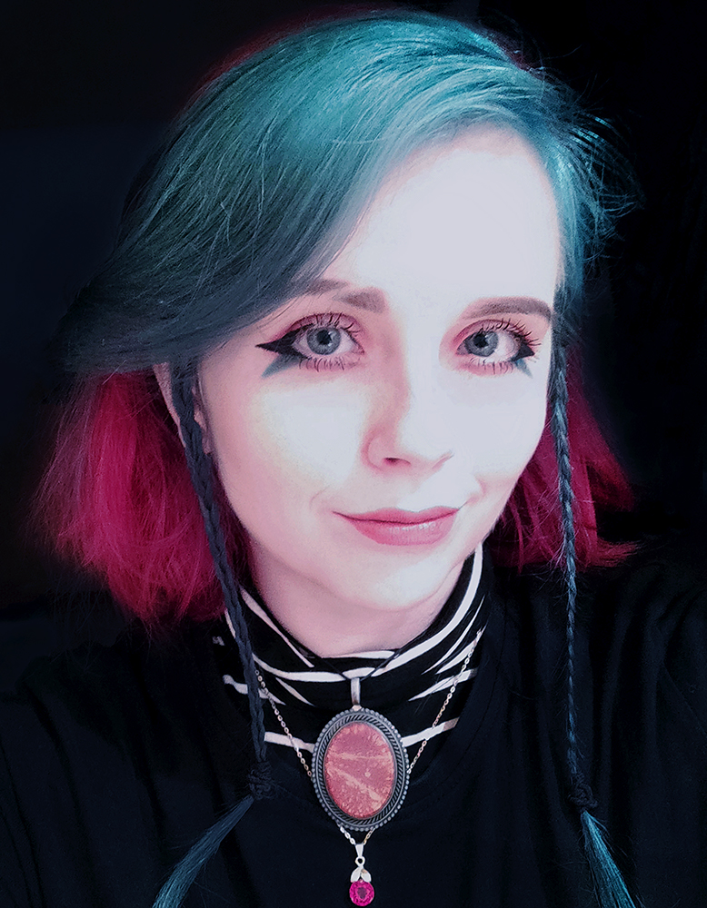

Moje první webové stránky

Vítejte na mých prvních webových stránkách! Psát weby se učím od poloviny března 2024, tak doufám, že se v tomto ohledu budu neustále rozvíjet. Stránky zatím ještě nejsou responzivní.
Co zde najdete? Pár informací o mně, o tom co mě baví a co jsem se za poslední dobu naučila.
Protože ráda fotím, přidala jsem sem i výběr fotografií z industriálního prostředí, které mám tak ráda.
Dále mě baví i focení koncertů, ale fotografie z nich sem přidám třeba někdy příště :)
Co umím?
Kromě průpravy malbou, kterou jsem vystudovala, mám za sebou práci na service desku v IT firmě, kde jsem pracovala s SW Confluence, Jirou a Zabbixem.
Ovládám Microsoft Office a mám ráda ve věcech pořádek a systém. Pokud jde něco roztřídit nebo
v něčem udělat pořádek, jsem vždy připravena!
V minulosti jsem hrála na několik hudebních nástrojů a věnovala jsem se zpěvu.
Co dalšího umím se dozvíte na stránce dovednosti!
Kontaktovat mě můžete zde.